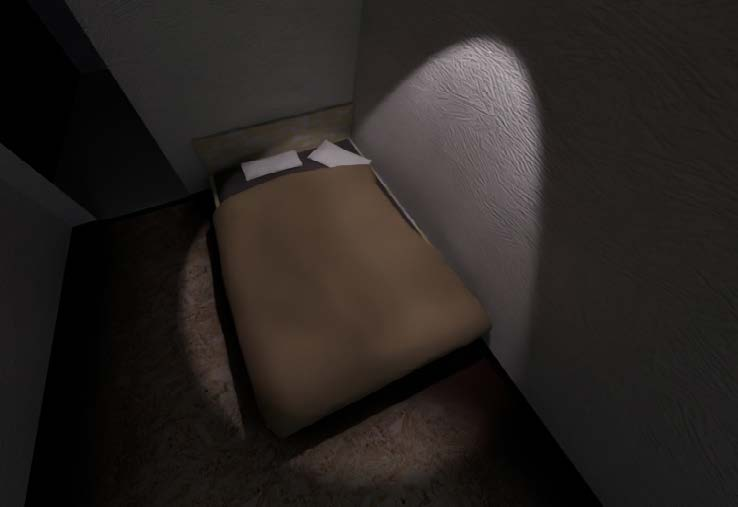
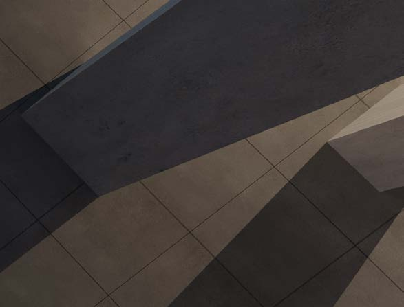
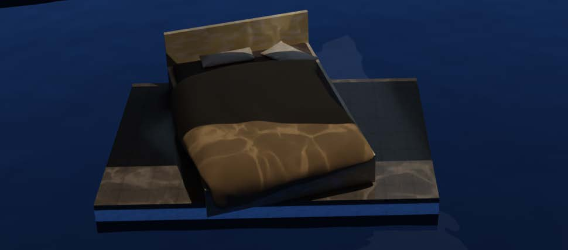
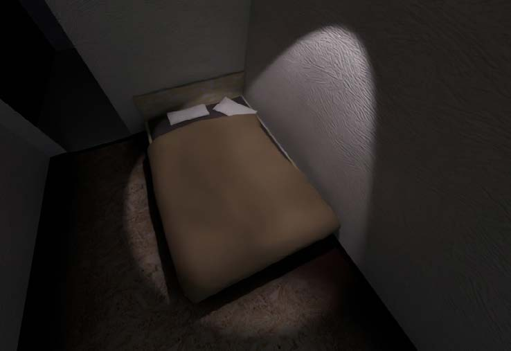
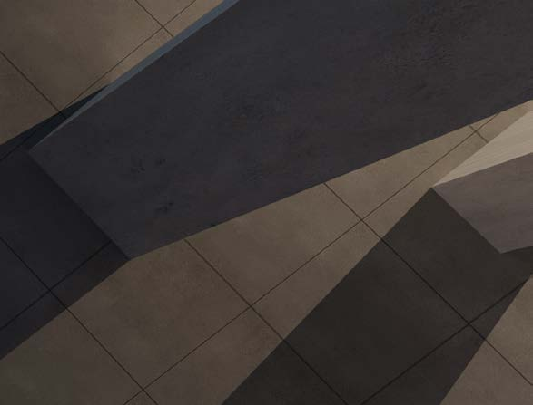
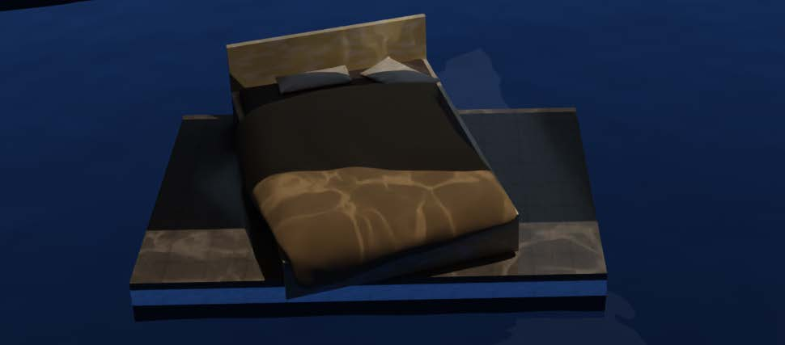

Ein Kurzfilm, der sich mit dem Thema der Identität auseinandersetzt. Der Film stellt Angststörungen und Depession audiovisuell dar, durch Assoziationen mit Texturen, Umgebungen, Materialien und Licht & Schatten.
 




